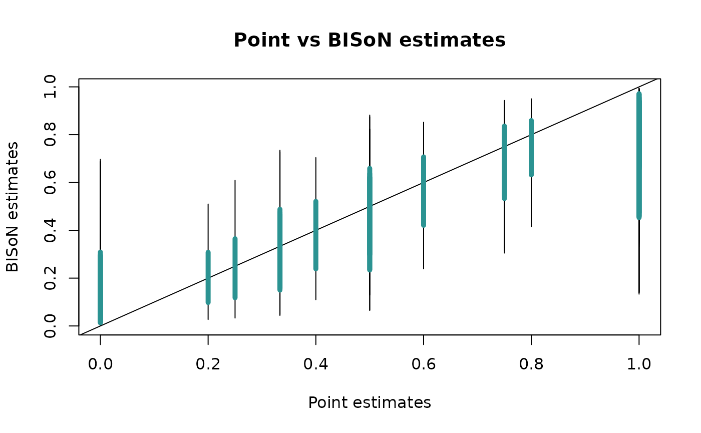

Introduction
bisonR is an R package for running social network analyses in the BISoN framework. BISoN models consist of two main stages: 1) fitting an edge weight model, capturing uncertainty in social network edges; and 2) propagating this uncertainty through subsequent analyses such as regressions. In this short tutorial we’ll cover how to fit edge weight models to a simulated dataset, and show how the fitted edge weight model can be used to run dyadic and nodal regression analysis, as well as non-random edge weight tests.
Before beginning, we’ll load in the bisonR package using library(bisonR), and we’ll also bring in dplyr to help with data wrangling. If you don’t already have bisonR installed, you can install it from Github using the following code:
remotes::install_github("JHart96/bisonR")
library(bisonR)
#> Loading required package: cmdstanr
#> This is cmdstanr version 0.5.3
#> - CmdStanR documentation and vignettes: mc-stan.org/cmdstanr
#> - CmdStan path: /home/runner/.cmdstan/cmdstan-2.30.1
#> - CmdStan version: 2.30.1
library(dplyr)
#>
#> Attaching package: 'dplyr'
#> The following objects are masked from 'package:stats':
#>
#> filter, lag
#> The following objects are masked from 'package:base':
#>
#> intersect, setdiff, setequal, unionWe will use the simulate_edge_model() function from bisonR to simulate some observation data. This dataframe is an example of the format that bisonR uses. Each row corresponds to an observation (such as an association within a sampling period of a dyad or a count of interactions between a dyad). Additional observation-level, dyad-level, or node-level factors can also be included.
sim_data <- simulate_edge_model("binary", aggregated = FALSE)
df <- sim_data$df_sim
head(df)
#> event node_1_id node_2_id age_diff age_1 age_2 location duration
#> 1 0 1 2 -16.325295 11.42923 27.75452 5 1
#> 2 0 1 2 -16.325295 11.42923 27.75452 4 1
#> 3 0 1 3 -13.533428 11.42923 24.96266 2 1
#> 4 0 1 3 -13.533428 11.42923 24.96266 3 1
#> 5 0 1 4 -7.053573 11.42923 18.48280 2 1
#> 6 0 1 4 -7.053573 11.42923 18.48280 4 1Edge Models
Depending on the type of data being analysed, different edge models should be used. See the BISoN introduction vignette for more details on this. In this example we’re using binary data, where events can either occur (1) or not occur (0) in a particular sampling period. In our dataframe this corresponds to event = 1 or event = 0.
The bisonR framework is fully Bayesian, and therefore specifying priors is a key part of any analysis. Priors can be tricky to set, and techniques for choosing good priors are outside the scope of this tutorial. You can see which priors need to be set for a particular model using the get_default_priors() function. These are only defaults and should almost always be changed.
priors <- get_default_priors("binary")
priors
#> $edge
#> [1] "normal(0, 2.5)"
#>
#> $fixed
#> [1] "normal(0, 2.5)"
#>
#> $random_mean
#> [1] "normal(0, 1)"
#>
#> $random_std
#> [1] "half-normal(1)"The priors object gives a list of priors on the parameters for the edge model: the edge weights, additional fixed effects, and random effect parameters. The prior_check() function can be used to plot the prior distributions, and we’ll use this to check that we’re happy with the priors:
prior_check(priors, "binary")
The priors should encode our prior beliefs about likely values of the parameters. For demonstration purposes let’s say we expect edge weights to be concentrated lower, towards zero. We can modify the priors on edge weight like this:
priors$edge <- "normal(-1, 2.5)"
prior_check(priors, "binary")
Depending on the biology, this might be more like what we want to see. Now we’ve set our priors and we’re happy with them, we can fit the edge model using the edge_model() function. This is one of the main functions of the bisonR package and has a lot of functionality. The main thing to worry about is how to define the edge weight model formula. The formula are designed to be familar to those who have used lm, lme4, brms, and other regression packages. The main difference here is that we need to include some measure of observation effort to get accurate estimates of edge weight uncertainty.
In bisonR, the left hand side of the ~ describes the sampling data, and uses the (event | duration) notation. In this notation, event corresponds to the name of the column in the dataframe that represents the measure of social events, such as 1 and 0 in the binary model, or frequencies 0, 1, 2, … in the count model. If using an unaggregated dataframe, the duration corresponds to the durations of each observation. In our case this is fixed, but this will depend on the data at hand.
The right hand side of the ~ describes the predictors that are associated with social events. In the standard BISoN model this is primarily the edge weight that we use to build the network, but this can also include additional effects such as age, sex, or even observation-level factors such as location, time of day, or weather, to name a few. Including additional effects will change the interpretation of edge weights, but could be useful if interested in the social network once some factors have been controlled for. Note the edge weights don’t need to be included, and you could use bisonR to estimate generative effects in a network. In this example we’ll keep things simple and just use edge weight as the only predictor. This is done using the dyad(node_1_id, node_2_id) notation. node_1_id and node_2_id represent the nodes corresponding to each individual in the network, and need to be stored as factors in the dataframe. They don’t need to be IDs, and could be individual names, as long as they’re stored as factors. Now we understand the basics of the formula notation, we can now fit the edge weight model:
fit_edge <- edge_model(
(event | duration) ~ dyad(node_1_id, node_2_id),
data=df,
data_type="binary",
priors=priors
)
#> Running MCMC with 4 parallel chains...
#>
#> Chain 1 finished in 0.8 seconds.
#> Chain 2 finished in 0.8 seconds.
#> Chain 3 finished in 0.8 seconds.
#> Chain 4 finished in 0.8 seconds.
#>
#> All 4 chains finished successfully.
#> Mean chain execution time: 0.8 seconds.
#> Total execution time: 1.1 seconds.Depending on your dataset this can take anywhere between a few tenths of a second and several hours. In particular if you have a large dataset and no observation-level predictors, it’s probably a good idea to use the aggregated version of the model where all observations per dyad are collapsed to a single row. This will speed up model fitting considerably.
Once the model has fitted, we need to check that the MCMC algorithm has behaved correctly. Often if there’s a major problem, the edge_model() function itself will have triggered warning messages above. But even if everything is silent, it’s still worth checking the traceplots to check the MCMC chains have converged. The chains should be well-mixed and look something like a fuzzy caterpillar. We can check for this using the plot_trace() function:
plot_trace(fit_edge, par_ids=2)
If we’re satisfied that the MCMC algorithm has done its job properly, then it’s time to see if the same is true for the model. One way to do this, among many others, is to check the predictions from the fitted model against the real data. This can be done using the plot_predictions() function. If the real data are within the ensemble of predictions from the model, then we have a little more faith that the model is capturing at least some important properties of the data. The statistical model implies a range of predictions that we can extract over multiple draws, the number of which can be set using the num_draws argument.
plot_predictions(fit_edge, num_draws=20, type="density")
The predictions from the model are shown in blue and the real data are shown in black. Ideally the blue lines should be distributed around the black line, indicating the real data are among the possible predictions of the model. It’s usually a good idea to run multiple predictive checks to ensure the model has captured various important characteristics of the data. Another type of check supported by bisonR is a comparison against point estimates of edge weights:
plot_predictions(fit_edge, num_draws=20, type="point")
This plot shows BISoN estimates denoted by an interval, where the 90% probability interval is shown by the thin line, and the 50% probability interval is shown by the thicker blue line. We should see a roughly linear relationship between point estimates and BISoN estimates, though at the extremes the BISoN estimates are likely to be less extreme unless there are sufficient data. This is by design, as BISoN uses a full probabilistic model of social events to generate its estimates, and will be sceptical of extreme values without sufficient evidence.
Now we’ve conducted two basic diagnostic checks of the edge weight model, we can start to trust what it’s telling us. To see a summary of edge weights and their credible intervals, we can use the summary() function:
summary(fit_edge)
#> === Fitted BISoN edge model ===
#> Data type: binary
#> Formula: (event | duration) ~ dyad(node_1_id, node_2_id)
#> Number of nodes: 10
#> Number of dyads: 45
#> Directed: FALSE
#> === Edge list summary ===
#> median 5% 95%
#> 1 <-> 2 0.069 0.003 0.491
#> 1 <-> 3 0.076 0.003 0.484
#> 1 <-> 4 0.073 0.003 0.492
#> 1 <-> 5 0.075 0.003 0.496
#> 1 <-> 6 0.045 0.002 0.316
#> 1 <-> 7 0.041 0.002 0.266
#> 1 <-> 8 0.107 0.004 0.696
#> 1 <-> 9 0.106 0.004 0.688
#> 1 <-> 10 0.047 0.002 0.302
#> 2 <-> 3 0.701 0.312 0.940
#> 2 <-> 4 0.910 0.592 0.994
#> 2 <-> 5 0.844 0.352 0.989
#> 2 <-> 6 0.743 0.135 0.987
#> 2 <-> 7 0.918 0.621 0.995
#> 2 <-> 8 0.920 0.664 0.994
#> 2 <-> 9 0.919 0.647 0.994
#> 2 <-> 10 0.844 0.334 0.991
#> 3 <-> 4 0.922 0.630 0.995
#> 3 <-> 5 0.923 0.640 0.994
#> 3 <-> 6 0.740 0.144 0.987
#> 3 <-> 7 0.888 0.484 0.992
#> 3 <-> 8 0.843 0.343 0.992
#> 3 <-> 9 0.737 0.146 0.985
#> 3 <-> 10 0.842 0.347 0.990
#> 4 <-> 5 0.103 0.003 0.676
#> 4 <-> 6 0.838 0.329 0.990
#> 4 <-> 7 0.843 0.350 0.990
#> 4 <-> 8 0.840 0.349 0.991
#> 4 <-> 9 0.105 0.003 0.689
#> 4 <-> 10 0.072 0.003 0.516
#> 5 <-> 6 0.843 0.364 0.990
#> 5 <-> 7 0.840 0.335 0.991
#> 5 <-> 8 0.732 0.131 0.986
#> 5 <-> 9 0.567 0.232 0.860
#> 5 <-> 10 0.300 0.044 0.735
#> 6 <-> 7 0.606 0.188 0.927
#> 6 <-> 8 0.905 0.571 0.994
#> 6 <-> 9 0.071 0.003 0.516
#> 6 <-> 10 0.075 0.003 0.502
#> 7 <-> 8 0.731 0.129 0.986
#> 7 <-> 9 0.293 0.041 0.751
#> 7 <-> 10 0.058 0.003 0.382
#> 8 <-> 9 0.056 0.002 0.380
#> 8 <-> 10 0.041 0.002 0.253
#> 9 <-> 10 0.189 0.027 0.524It can be hard to get an intuitive idea for what’s going on looking only at a summary table, so this is where it can be useful to visualise the network too. The plot_network() function does this for BISoN edge weight models, where uncertainty is shown on edge weights. Uncertainty is visualised by showing the lower and upper bounds as overlapping edges in the network.
plot_network(fit_edge, lwd=5)
Non-random Edge Weights
Now that we have a fitted edge weight model we’re happy with, we can move to downstream analyses. The first of these we’ll consider is the non-random edge weight analysis, which is a Bayesian version of the Bejder et al. 1998 test for non-random association. In this analysis we compare the fitted edge weight model to a null version of the model where all edges have the same weight. We then use the model_comparison function to estimate the relative probabilities of the full edge weight model against the null model:
fit_null <- edge_model(
(event | duration) ~ 1,
data=df,
data_type="binary",
priors=priors
)
#> Running MCMC with 4 parallel chains...
#>
#> Chain 1 finished in 0.4 seconds.
#> Chain 4 finished in 0.3 seconds.
#> Chain 2 finished in 0.4 seconds.
#> Chain 3 finished in 0.4 seconds.
#>
#> All 4 chains finished successfully.
#> Mean chain execution time: 0.4 seconds.
#> Total execution time: 0.5 seconds.
model_comparison(list(non_random_model=fit_edge, random_model=fit_null))
#> Warning: Some Pareto k diagnostic values are too high. See help('pareto-k-diagnostic') for details.
#> Method: stacking
#> ------
#> weight
#> non_random_model 1.000
#> random_model 0.000This shows the relative probabilities of the models in the comparison. In our case the results are conclusive, the network seems to be non-random. It’s likely that this is the case in almost all networks, but you might want to conduct this test anyway.
Dyadic Regression
Dyadic regression is where dyadic network properties (usually edge weight) are regressed against dyad-level properties. In our case we’ll be regressing edge weight against difference in age, to test the hypothesis that differences in age drive social connections. Just like edge weight models, we need to set priors, and this can be done in much the same way as last time:
df_dyadic <- df %>%
distinct(node_1_id, node_2_id, age_diff)
priors <- get_default_priors("dyadic_regression")
priors
#> $fixed
#> [1] "normal(0, 1)"
#>
#> $random_mean
#> [1] "normal(0, 1)"
#>
#> $random_std
#> [1] "half-normal(1)"
#>
#> $multimembership
#> [1] "half-normal(1)"
#>
#> $error
#> [1] "half-normal(1)"To check these priors we could use the prior_check() function like last time, but regression coefficients are usually harder to intuitively set priors for. Instead of visualising the coefficient priors directly, we’ll simulate the predictions of the model based only on the priors. We can use prior_predictive_check() for this:
prior_predictive_check(
dyad(node_1_id, node_2_id) ~ age_diff,
data=df_dyadic,
options=list(edgemodel=fit_edge, mm=FALSE),
priors=priors,
model_type="dyadic_regression",
plot_type="marginal"
)
#> Running MCMC with 4 parallel chains...
#>
#> Chain 1 Iteration: 1 / 2000 [ 0%] (Warmup)
#> Chain 1 Iteration: 500 / 2000 [ 25%] (Warmup)
#> Chain 1 Iteration: 1000 / 2000 [ 50%] (Warmup)
#> Chain 1 Iteration: 1001 / 2000 [ 50%] (Sampling)
#> Chain 1 Iteration: 1500 / 2000 [ 75%] (Sampling)
#> Chain 1 Iteration: 2000 / 2000 [100%] (Sampling)
#> Chain 2 Iteration: 1 / 2000 [ 0%] (Warmup)
#> Chain 2 Iteration: 500 / 2000 [ 25%] (Warmup)
#> Chain 2 Iteration: 1000 / 2000 [ 50%] (Warmup)
#> Chain 2 Iteration: 1001 / 2000 [ 50%] (Sampling)
#> Chain 2 Iteration: 1500 / 2000 [ 75%] (Sampling)
#> Chain 3 Iteration: 1 / 2000 [ 0%] (Warmup)
#> Chain 3 Iteration: 500 / 2000 [ 25%] (Warmup)
#> Chain 3 Iteration: 1000 / 2000 [ 50%] (Warmup)
#> Chain 3 Iteration: 1001 / 2000 [ 50%] (Sampling)
#> Chain 4 Iteration: 1 / 2000 [ 0%] (Warmup)
#> Chain 4 Iteration: 500 / 2000 [ 25%] (Warmup)
#> Chain 4 Iteration: 1000 / 2000 [ 50%] (Warmup)
#> Chain 4 Iteration: 1001 / 2000 [ 50%] (Sampling)
#> Chain 4 Iteration: 1500 / 2000 [ 75%] (Sampling)
#> Chain 1 finished in 0.2 seconds.
#> Chain 2 Iteration: 2000 / 2000 [100%] (Sampling)
#> Chain 3 Iteration: 1500 / 2000 [ 75%] (Sampling)
#> Chain 3 Iteration: 2000 / 2000 [100%] (Sampling)
#> Chain 4 Iteration: 2000 / 2000 [100%] (Sampling)
#> Chain 2 finished in 0.2 seconds.
#> Chain 3 finished in 0.2 seconds.
#> Chain 4 finished in 0.2 seconds.
#>
#> All 4 chains finished successfully.
#> Mean chain execution time: 0.2 seconds.
#> Total execution time: 0.3 seconds.
#> Warning: 1 of 4000 (0.0%) transitions ended with a divergence.
#> See https://mc-stan.org/misc/warnings for details.
The plot shows the marginal effect describing the relationship between predictor and response. At its most extreme, our prior allows an age difference of 10 to be associated with a difference in response of around 20 - 30. This is probably a bit more extreme than would be ideal, but for the purposes of this tutorial we’ll leave the priors as they are for now.
The dataframe for a dyadic regression will be different to the one used to fit an edge weight model. In this case we need a row for each dyad, and we need to index this using the same factor-typed node variables with the same levels as were used when fitting the edge weight model. In our example we have all the necessary data in the original dataframe, and we can extract it using dplyr. The dyadic_regression() function uses a similar formula syntax as the edge_model function. In our example we use the edge weight, described by dyad(node_1_id, node_2_id), on the left hand side as the response variable. We use the age_diff variable from the dataframe as the single fixed effect, but additional fixed and random effects can also be included. Note by default the dyadic regression function uses multi-membership effects, denoted by the argument mm, to capture non-independence due to nodes in the regression. This is a vital feature for some analyses to prevent spurious conclusions, but for the sake of our simulated data we don’t need to include this effect here.
fit_dyadic <- dyadic_regression(
dyad(node_1_id, node_2_id) ~ age_diff,
fit_edge,
df_dyadic,
mm=FALSE,
priors=priors
)
#> Running MCMC with 4 parallel chains...
#>
#> Chain 1 Iteration: 1 / 2000 [ 0%] (Warmup)
#> Chain 2 Iteration: 1 / 2000 [ 0%] (Warmup)
#> Chain 3 Iteration: 1 / 2000 [ 0%] (Warmup)
#> Chain 4 Iteration: 1 / 2000 [ 0%] (Warmup)
#> Chain 2 Iteration: 500 / 2000 [ 25%] (Warmup)
#> Chain 3 Iteration: 500 / 2000 [ 25%] (Warmup)
#> Chain 4 Iteration: 500 / 2000 [ 25%] (Warmup)
#> Chain 1 Iteration: 500 / 2000 [ 25%] (Warmup)
#> Chain 3 Iteration: 1000 / 2000 [ 50%] (Warmup)
#> Chain 3 Iteration: 1001 / 2000 [ 50%] (Sampling)
#> Chain 1 Iteration: 1000 / 2000 [ 50%] (Warmup)
#> Chain 1 Iteration: 1001 / 2000 [ 50%] (Sampling)
#> Chain 2 Iteration: 1000 / 2000 [ 50%] (Warmup)
#> Chain 2 Iteration: 1001 / 2000 [ 50%] (Sampling)
#> Chain 4 Iteration: 1000 / 2000 [ 50%] (Warmup)
#> Chain 4 Iteration: 1001 / 2000 [ 50%] (Sampling)
#> Chain 3 Iteration: 1500 / 2000 [ 75%] (Sampling)
#> Chain 1 Iteration: 1500 / 2000 [ 75%] (Sampling)
#> Chain 2 Iteration: 1500 / 2000 [ 75%] (Sampling)
#> Chain 4 Iteration: 1500 / 2000 [ 75%] (Sampling)
#> Chain 3 Iteration: 2000 / 2000 [100%] (Sampling)
#> Chain 3 finished in 3.2 seconds.
#> Chain 1 Iteration: 2000 / 2000 [100%] (Sampling)
#> Chain 2 Iteration: 2000 / 2000 [100%] (Sampling)
#> Chain 4 Iteration: 2000 / 2000 [100%] (Sampling)
#> Chain 1 finished in 3.4 seconds.
#> Chain 2 finished in 3.4 seconds.
#> Chain 4 finished in 3.3 seconds.
#>
#> All 4 chains finished successfully.
#> Mean chain execution time: 3.3 seconds.
#> Total execution time: 3.4 seconds.Like last time we want to check that our model has fit properly and makes good predictions. This can be done in exactly the same way as last time:
plot_trace(fit_dyadic, par_ids=1)
Again we’ll use plot_predictions() to check model fit:
plot_predictions(fit_dyadic, num_draws=20, type="density")
Now we can examine the regression coefficients using summary(). These can be interpreted in mostly the same way as a standard regression, though categories will be treated differently. See here for more information on how categories are handled in bisonR regression functions.
summary(fit_dyadic)
#> === Fitted dyadic regression model ===
#> Formula: dyad(node_1_id, node_2_id) ~ age_diff
#> Number of dyads: 45
#> === Coefficient summary ===
#> variable 50% 5% 95%
#> intercept -0.161 -0.534 0.215
#> fixed_age_diff 0.266 0.211 0.320We can also visualise the estimated marginal effect using plot_predictions():
plot_predictions(fit_dyadic, num_draws=20, type="marginal")
Now we’ve seen how to fit a dyadic regression, we can move to another common type of analysis: nodal regression.
Nodal Regression
Nodal regression is where node-level network properties, such as centrality, are regressed against node-level properties, such as age. In the same spirit as last time we need to prepare a matrix where each row corresponds to a node. In our case we can extract this from the original matrix using dplyr:
df_1 <- df %>%
select(node_id=node_1_id, age=age_1)
df_2 <- df %>%
select(node_id=node_2_id, age=age_2)
df_nodal <- bind_rows(df_1, df_2) %>%
distinct(node_id, age) %>%
mutate(age_std=scale(age))
df_nodal
#> node_id age age_std
#> 1 1 11.42923 -1.58904350
#> 2 2 27.75452 1.56095831
#> 3 3 24.96266 1.02226141
#> 4 4 18.48280 -0.22804090
#> 5 5 21.73731 0.39992360
#> 6 6 18.88215 -0.15098629
#> 7 7 18.72064 -0.18215034
#> 8 8 11.75386 -1.52640547
#> 9 9 20.01871 0.06831629
#> 10 10 22.90466 0.62516687Priors can be set in the exact same way as for the dyadic_regression() function:
priors <- get_default_priors("nodal_regression")
priors$fixed <- "normal(0, 1)"
priors
#> $fixed
#> [1] "normal(0, 1)"
#>
#> $random_mean
#> [1] "normal(0, 1)"
#>
#> $random_std
#> [1] "half-normal(1)"
#>
#> $error
#> [1] "half-normal(1)"Run the prior check in much the same way as well:
prior_check(priors, model_type="nodal_regression")
prior_predictive_check(
strength(node_id) ~ age_std,
data=df_nodal,
model_type="nodal_regression",
options=list(edgemodel=fit_edge),
plot_type="marginal"
)
#> Running MCMC with 4 parallel chains...
#>
#> Chain 1 Iteration: 1 / 2000 [ 0%] (Warmup)
#> Chain 1 Iteration: 500 / 2000 [ 25%] (Warmup)
#> Chain 1 Iteration: 1000 / 2000 [ 50%] (Warmup)
#> Chain 1 Iteration: 1001 / 2000 [ 50%] (Sampling)
#> Chain 1 Iteration: 1500 / 2000 [ 75%] (Sampling)
#> Chain 1 Iteration: 2000 / 2000 [100%] (Sampling)
#> Chain 2 Iteration: 1 / 2000 [ 0%] (Warmup)
#> Chain 2 Iteration: 500 / 2000 [ 25%] (Warmup)
#> Chain 2 Iteration: 1000 / 2000 [ 50%] (Warmup)
#> Chain 2 Iteration: 1001 / 2000 [ 50%] (Sampling)
#> Chain 2 Iteration: 1500 / 2000 [ 75%] (Sampling)
#> Chain 2 Iteration: 2000 / 2000 [100%] (Sampling)
#> Chain 3 Iteration: 1 / 2000 [ 0%] (Warmup)
#> Chain 3 Iteration: 500 / 2000 [ 25%] (Warmup)
#> Chain 3 Iteration: 1000 / 2000 [ 50%] (Warmup)
#> Chain 3 Iteration: 1001 / 2000 [ 50%] (Sampling)
#> Chain 3 Iteration: 1500 / 2000 [ 75%] (Sampling)
#> Chain 3 Iteration: 2000 / 2000 [100%] (Sampling)
#> Chain 4 Iteration: 1 / 2000 [ 0%] (Warmup)
#> Chain 4 Iteration: 500 / 2000 [ 25%] (Warmup)
#> Chain 4 Iteration: 1000 / 2000 [ 50%] (Warmup)
#> Chain 4 Iteration: 1001 / 2000 [ 50%] (Sampling)
#> Chain 4 Iteration: 1500 / 2000 [ 75%] (Sampling)
#> Chain 4 Iteration: 2000 / 2000 [100%] (Sampling)
#> Chain 1 finished in 0.0 seconds.
#> Chain 2 finished in 0.1 seconds.
#> Chain 3 finished in 0.1 seconds.
#> Chain 4 finished in 0.0 seconds.
#>
#> All 4 chains finished successfully.
#> Mean chain execution time: 0.1 seconds.
#> Total execution time: 0.2 seconds.
For the purposes of demonstration we won’t worry too much about how these checks look, but this should give an idea about how to go about setting priors.
The formula syntax for nodal regression is very similar to that of the dyadic regression, but because this analysis is at the level of the node, not the dyad, we no longer need a dyad(node_1_id, node_2_id) term. Instead we want to use a node-level network metric to characterise node positions within the network, while maintaining uncertainty from the edge weights. bisonR can handle all of this automatically, you simply need to specify a network metric to use. In our case we’ll use the classic measure of centrality strength(), but many others are available. See the documentation here for further details.
fit_nodal <- nodal_regression(
strength(node_id) ~ age_std,
fit_edge,
df_nodal,
priors=priors
)
#> Running MCMC with 4 parallel chains...
#>
#> Chain 1 Iteration: 1 / 2000 [ 0%] (Warmup)
#> Chain 1 Iteration: 500 / 2000 [ 25%] (Warmup)
#> Chain 1 Iteration: 1000 / 2000 [ 50%] (Warmup)
#> Chain 1 Iteration: 1001 / 2000 [ 50%] (Sampling)
#> Chain 1 Iteration: 1500 / 2000 [ 75%] (Sampling)
#> Chain 1 Informational Message: The current Metropolis proposal is about to be rejected because of the following issue:
#> Chain 1 Exception: multi_normal_lpdf: LDLT_Factor of covariance parameter is not positive definite. last conditional variance is -1.38778e-16. (in '/tmp/Rtmp763Kkh/model-443f4418002a.stan', line 40, column 4 to column 96)
#> Chain 1 If this warning occurs sporadically, such as for highly constrained variable types like covariance matrices, then the sampler is fine,
#> Chain 1 but if this warning occurs often then your model may be either severely ill-conditioned or misspecified.
#> Chain 1
#> Chain 2 Iteration: 1 / 2000 [ 0%] (Warmup)
#> Chain 2 Iteration: 500 / 2000 [ 25%] (Warmup)
#> Chain 2 Iteration: 1000 / 2000 [ 50%] (Warmup)
#> Chain 2 Iteration: 1001 / 2000 [ 50%] (Sampling)
#> Chain 2 Iteration: 1500 / 2000 [ 75%] (Sampling)
#> Chain 3 Iteration: 1 / 2000 [ 0%] (Warmup)
#> Chain 3 Iteration: 500 / 2000 [ 25%] (Warmup)
#> Chain 3 Iteration: 1000 / 2000 [ 50%] (Warmup)
#> Chain 3 Iteration: 1001 / 2000 [ 50%] (Sampling)
#> Chain 3 Informational Message: The current Metropolis proposal is about to be rejected because of the following issue:
#> Chain 3 Exception: multi_normal_lpdf: LDLT_Factor of covariance parameter is not positive definite. last conditional variance is -1.38778e-16. (in '/tmp/Rtmp763Kkh/model-443f4418002a.stan', line 40, column 4 to column 96)
#> Chain 3 If this warning occurs sporadically, such as for highly constrained variable types like covariance matrices, then the sampler is fine,
#> Chain 3 but if this warning occurs often then your model may be either severely ill-conditioned or misspecified.
#> Chain 3
#> Chain 4 Iteration: 1 / 2000 [ 0%] (Warmup)
#> Chain 4 Iteration: 500 / 2000 [ 25%] (Warmup)
#> Chain 4 Iteration: 1000 / 2000 [ 50%] (Warmup)
#> Chain 4 Iteration: 1001 / 2000 [ 50%] (Sampling)
#> Chain 1 Iteration: 2000 / 2000 [100%] (Sampling)
#> Chain 1 finished in 0.2 seconds.
#> Chain 2 Iteration: 2000 / 2000 [100%] (Sampling)
#> Chain 2 finished in 0.2 seconds.
#> Chain 3 Iteration: 1500 / 2000 [ 75%] (Sampling)
#> Chain 3 Iteration: 2000 / 2000 [100%] (Sampling)
#> Chain 4 Iteration: 1500 / 2000 [ 75%] (Sampling)
#> Chain 4 Iteration: 2000 / 2000 [100%] (Sampling)
#> Chain 3 finished in 0.2 seconds.
#> Chain 4 finished in 0.2 seconds.
#>
#> All 4 chains finished successfully.
#> Mean chain execution time: 0.2 seconds.
#> Total execution time: 0.4 seconds.Once the model has been fitted, we need to employ the same diagnostic checks as last time to ensure the model is reliable. This may seem a little tedious, and it won’t always go smoothly, but it’s a vital part of model fitting that is essential for reliable inferences, even in frequentist statistics.
plot_trace(fit_nodal, par_ids=1)
Just like the previous example, we can now summarise the regression coefficients using the summary() function:
summary(fit_nodal)
#> === Fitted dyadic regression model ===
#> Formula: strength(node_id) ~ age_std
#> Number of dyads: 45
#> === Coefficient summary ===
#> variable 50% 5% 95%
#> intercept -0.007 -0.582 0.546
#> fixed_age_std 0.836 0.197 1.440It’s also nice to use predictions from the model to help understand the model:
plot_predictions(fit_nodal, num_draws=20, type="marginal")
Network metrics
As well as the types of statistical analysis we’ve already covered, network metrics can also be extracted for use in other quantitative or qualitative analyses. This can be done with the draw_network_metric_samples() function for network-level metrics (also known as global metrics) or draw_node_metric_samples() for node-level metrics. Let’s try this out for social differentiation:
social_differentiation_samples <- draw_network_metric_samples(fit_edge, "social_differentiation")
social_differentiation_samples
#> 50% 5% 95%
#> 0.7474508 0.6668899 0.8351394We can visualise the posterior distribution of social differentiation by
plot(social_differentiation_samples)
The posterior samples can now be used descriptively, to compare networks, or in other downstream analyses.
Conclusion
This was a very brief introduction to the bisonR package, and we hope it was useful. The R package has many more features than were shown here, and the package is under constant development. We welcome any and all feedback and criticism. We hope you find this package useful, happy social network analysis!